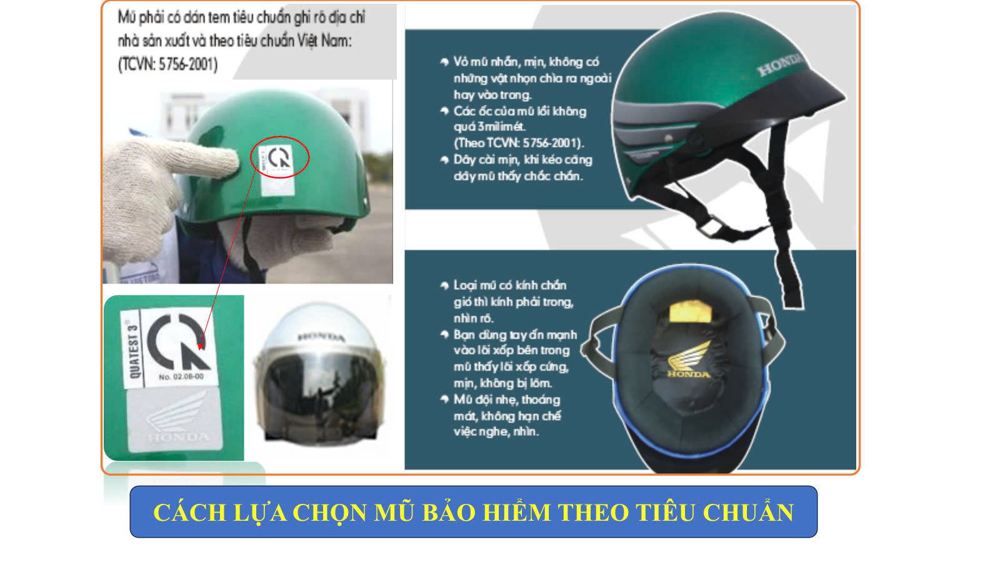
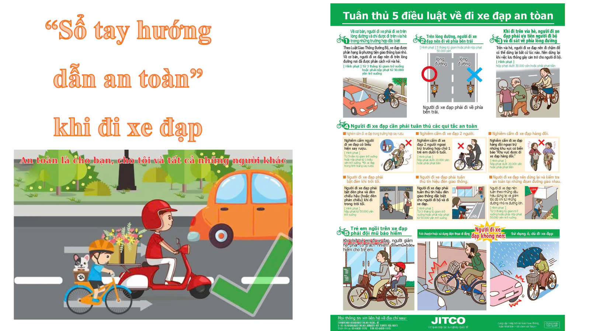

Luật Giao Thông Cơ Bản và hướng dẫn cách đeo mũ bảo hiểm đúng cách
Thông tin về những luật lệ cần tuân thủ khi tham gia giao thông.
- Đội mũ bảo hiểm khi đi xe máy, xe đạp điện.
- Tuân thủ tín hiệu đèn giao thông và biển báo.
- Không vượt đèn đỏ và không lái xe sau khi uống rượu bia.

Bài học An toàn
Tuân thủ 5 điều luật về đi xe đạp an toàn

- Về cơ bản, người đi xe trên lòng đường và chỉ được đi trên vỉa hè trong những trường hợp đặc biệt.
- Trên lòng đường, người đi xe đạp nên đi về phía bên trái.
- Khi đi trên vỉa hè, người đi xe đạp phải ưu tiên người đi bộ và đi sát về phía lòng đường.
- Người đi xe cần phải tuân thủ các qui tắc an toàn.
- Trẻ em ngồi trên xe đạp phải đội mũ bảo hiểm.
Video cách đi xe đạp điện an toàn: